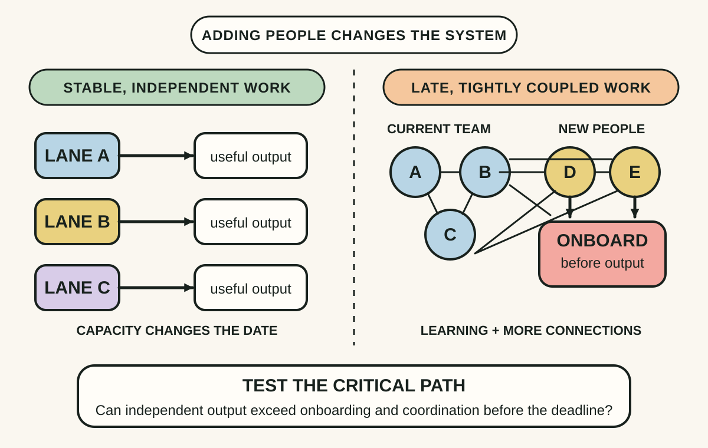
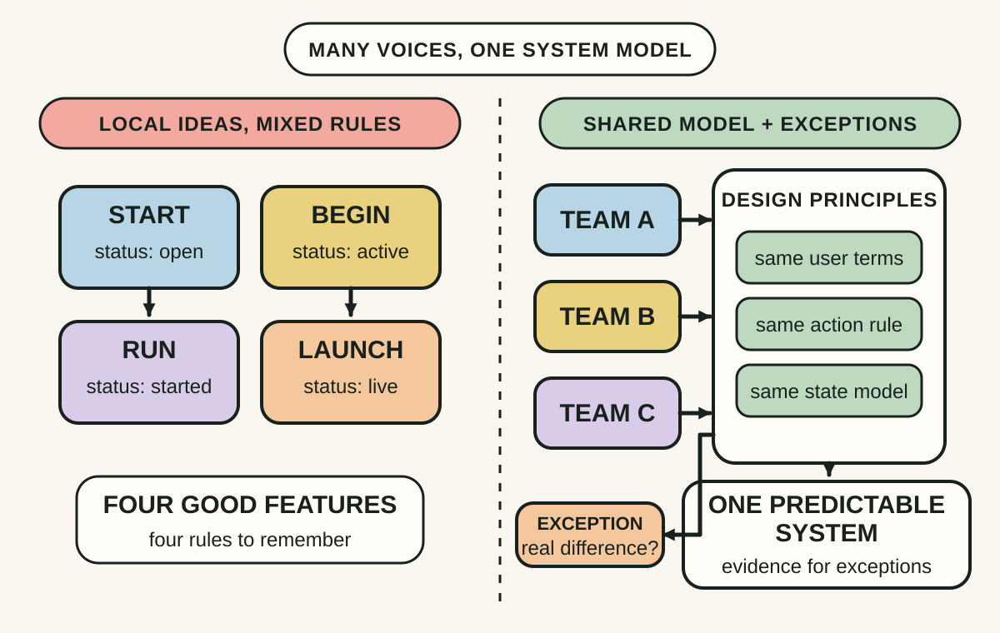
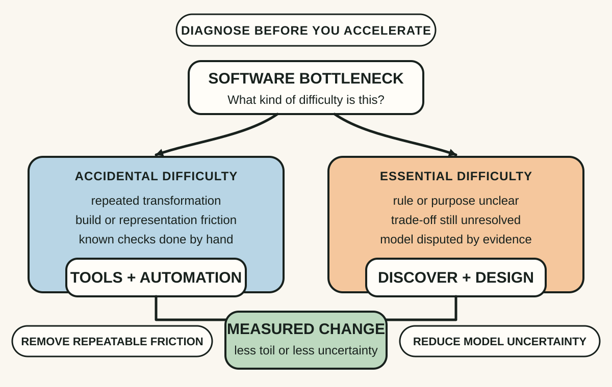

Daily lesson ·
The Mythical Man-Month
Treat schedule pressure as a coordination problem, protect a coherent design across many contributors and distinguish work that tools can remove from complexity the team still has to understand.
Idea 1
People and months are not interchangeable #
The idea
Brooks argues that effort and elapsed time cannot be exchanged freely. Some work can be divided among independent contributors, but tightly connected software work also requires learning, sequencing and communication. When a project is already late, new people consume experienced teammates' time before they contribute and add more coordination paths to the group.
His famous staffing warning is therefore a mechanism, not magic arithmetic. The schedule response depends on how much work is safely partitionable, how long useful onboarding takes and whether the remaining work needs shared understanding. Treating every person-month as identical hides those conditions precisely when pressure is highest.

Why it matters
A headcount response can feel decisive while making the critical path longer. Exposing task dependencies, onboarding time and communication load gives leaders a better choice among narrowing scope, removing a blocker, stabilising an interface, pairing temporarily or adding genuinely independent capacity.
Apply it today
Choose one pressured delivery and list the remaining tasks under independent, sequential or shared-context work.
For one proposed new contributor, write who must teach them, when they could first change the critical path and which stable boundary lets them work independently.
Compare that plan with one non-staffing response such as reducing scope, removing a dependency or protecting the current team's focus.
Caveat or failure mode
Adding people does not always make a project later. Early staffing, experienced contributors, modular work or a separate bottleneck can improve the date. Brooks's law is most useful as a warning against unexamined late staffing, not as a reason to deny help or overload a small team indefinitely.
Idea 2
Protect conceptual integrity #
The idea
Brooks argues that a system is easier to learn and use when its parts express one coherent set of design ideas. A collection of individually clever features can still feel arbitrary if commands, concepts and exceptions follow different rules. He calls this unity conceptual integrity and treats it as more important than including every locally attractive idea.
His original governance proposal concentrates architectural decisions in a small group while implementation scales across a larger team. The durable argument is about a coherent decision model, not unquestioned authority: someone must reconcile conflicts, preserve shared principles and make the whole system intelligible across many contributions.

Why it matters
Without a shared model, every feature can be reasonable in isolation while users and maintainers must learn a new rule each time. Explicit principles and exception decisions reduce accidental variation, reveal real trade-offs and let many people contribute without making the product feel designed by unrelated committees.
Apply it today
Choose one product surface and write three rules a user should be able to predict across every feature on that surface.
Find one current exception and record whether it reflects a real domain difference, a delivery shortcut or an unresolved design conflict.
Name who will decide the conflict after affected users, engineers and operators provide evidence.
Caveat or failure mode
Brooks's language of design aristocracy is dated, and central control can suppress domain knowledge, accessibility needs or legitimate disagreement. Coherence should come from transparent principles, inclusive review and reversible decisions, not status. A single architect can also become a bottleneck or preserve a flawed model too long.
Idea 3
Remove accident, face essence #
The idea
In the anniversary edition's No Silver Bullet essay, Brooks separates accidental difficulties of software production from essential difficulties in the problem itself. Better languages, tools and automation can remove representation, build and testing friction, but software still has to embody complex rules, conform to its environment, change with its world and make an invisible structure understandable.
Brooks did not argue that tools are useless. He argued against expecting one technique to deliver an order-of-magnitude improvement across all software work within the forecast period. After accidental toil falls, progress depends more visibly on discovering what to build, modelling the domain, testing assumptions and revising the design.

Why it matters
A powerful tool can accelerate the wrong model, while a design workshop can waste time on work a script should remove. Naming the kind of difficulty helps teams use automation where it compounds and reserve human attention for decisions whose meaning cannot be generated from a faster build alone.
Apply it today
Choose one recurring delay and write the exact evidence that would show it is mechanical toil or unresolved problem understanding.
If it is mechanical, name one repeatable transformation or check to automate. If it is conceptual, name one example, prototype or stakeholder decision that would reduce uncertainty.
Set one observable result for the intervention, such as minutes removed, an assumption decided or a smaller set of plausible models.
Caveat or failure mode
The boundary between essential and accidental difficulty is not fixed. New representations can change how a problem is understood, and AI can produce large gains on particular tasks without resolving product intent or correctness. Treat Brooks's distinction as a diagnostic lens, not proof that current tools cannot transform software work.
Knowledge check · 6 questions
Learning check
Answer all 6, then check your answers. Your first result stays in this browser, and each explanation appears after you check. A 3-question review can appear on the homepage from tomorrow.
6 questions not yet answered.
Today's experiment · 10 minutes
Run one delivery-pressure diagnostic
- Choose one delayed or uncertain delivery and list its independent, sequential and shared-context work.
- Draw the current contributors as dots and add a line wherever two people must coordinate before the critical work can move.
- Write one design principle that every contribution must preserve and identify the owner of a disputed exception.
- Label the main bottleneck mechanical toil or unresolved understanding, then choose one matching intervention.
- Record the observable result you expect by tomorrow: a removed task, a decided rule, a stable boundary or a changed critical path.
Observable result: You finish with a one-page pressure map that shows whether extra staffing helps, which design rule protects coherence and whether the bottleneck needs automation or learning.
Retrieval practice
Spaced recall
- From Release It!: which finite resource can turn a slow dependency into a failure that spreads beyond its original boundary?
- From Team Topologies: which interaction mode best fits a short period of joint discovery before teams return to clearer ownership?
- From Thinking in Systems: where could a well-intended staffing response create a reinforcing loop that increases delay?
Verification
Source notes
These links support the attributed claims and edition details; applications and extensions are labelled in the lesson.
- Pearson: The Mythical Man-Month anniversary edition details and contents
- UNC Computer Science: Frederick Brooks, No Silver Bullet
- IEEE Computer Society: Frederick P. Brooks Jr. and the OS/360 context
- Simulation: system dynamics and conditional limits of Brooks's Law
- IEEE Computer Society: Brooks's architecture metaphor and user-centred constraints
One-sentence takeaway